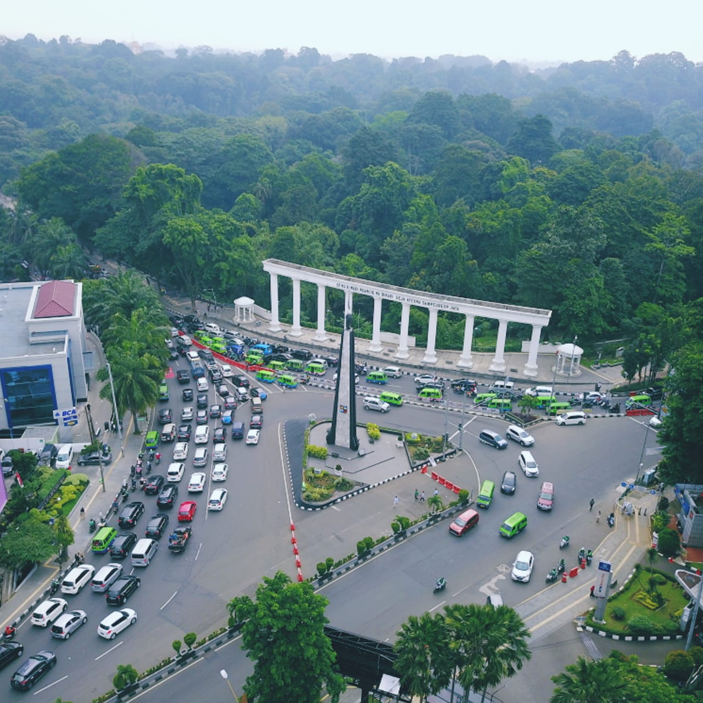
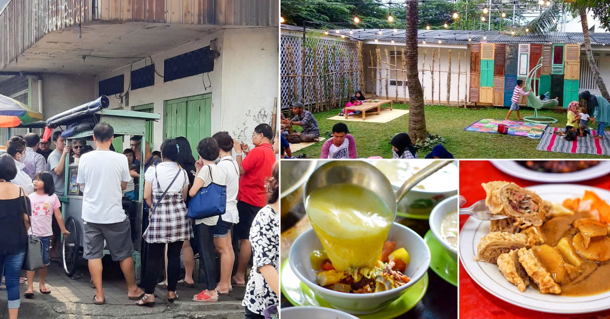
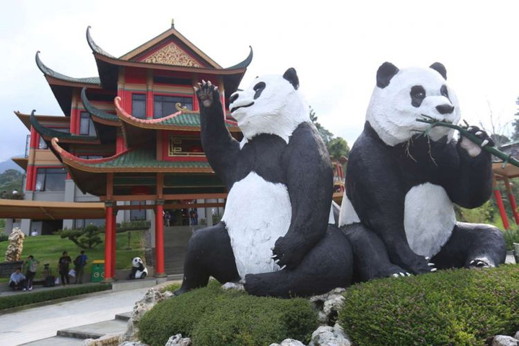

Sejarah
Kota Bogor memiliki sejarah yang panjang dan kaya akan kebudayaan.
Sejak zaman Kerajaan Sunda, daerah ini sudah dikenal sebagai pusat
pemerintahan dan perdagangan yang strategis. Pada masa Kesultanan
Banten, Bogor menjadi pusat pemerintahan dengan dibangunnya Istana
Banten di daerah ini. Pada tahun 1745, Sultan Banten memerintahkan
pembangunan sebuah istana baru di Bogor yang kemudian menjadi Istana
Bogor yang masih berdiri hingga sekarang. Pada masa kolonial
Belanda, Bogor menjadi tempat tinggal resmi Gubernur Jenderal Hindia
Belanda yang dikenal dengan nama Buitenzorg. Selama masa ini, banyak
bangunan dan taman dibangun, seperti Kebun Raya Bogor yang menjadi
tempat penelitian ilmiah dan wisata yang terkenal di dunia.
Setelah Indonesia merdeka, Bogor menjadi kota otonom di provinsi
Jawa Barat pada tahun 1950. Dalam perkembangannya, kota ini menjadi
pusat pertanian dan industri manufaktur. Di samping itu, pariwisata
juga menjadi sektor yang berkembang pesat, terutama karena
keberadaan Istana Bogor dan Kebun Raya Bogor. Kebun Raya Bogor masih
menjadi salah satu kebun raya terbesar dan terlengkap di dunia yang
menarik banyak pengunjung setiap tahunnya. Pada tahun 1995, kota
Bogor menjadi salah satu kota satelit yang masuk dalam wilayah
metropolitan Jakarta. Hal ini membawa dampak positif dalam
pembangunan infrastruktur dan fasilitas publik di kota ini. Saat
ini, Bogor menjadi kota modern dengan sektor pariwisata, pendidikan,
dan perdagangan yang semakin berkembang pesat. Meskipun demikian,
kota ini masih mampu mempertahankan budaya dan nilai-nilai sejarah
yang menjadi identitasnya.

Kuliner
Kota Bogor terkenal dengan kuliner khasnya yang lezat dan beragam.
Salah satu kuliner khas yang terkenal di Bogor adalah
Soto Bogor, yang terbuat dari daging sapi, kentang, tomat, daun bawang, serta
kuah kaldu yang kaya rempah. Selain itu, ada juga
Nasi Goreng
khas Bogor yang diolah dengan cara yang unik, yaitu dengan
menggunakan bumbu yang terdiri dari kecap manis, cabai, telur, dan
daging ayam atau sapi. Kuliner lain yang tak kalah terkenal adalah
Cungkring
yang renyah dan gurih. Seporsi cungkring ini berisi potongan jeroan
sapi seperti cingur, kikil, urat, kuping, daging, dan masih banyak
lagi. Setelah itu diberi lontong dan kripik tempe.
Selain itu, kota Bogor juga memiliki kuliner khas lain yang tidak
kalah lezat. Salah satu contohnya adalah
Nasi Liwet Bogor, yang terbuat dari nasi yang dimasak dengan santan dan dibumbui
dengan rempah-rempah khas Indonesia, serta disajikan dengan ayam
atau ikan goreng, sayur asam, dan sambal terasi. Kuliner lain yang
juga populer di Bogor adalah
Laksa Bogor, yaitu mie kuning yang disajikan dengan kuah santan dan ikan,
serta dilengkapi dengan potongan daun kemangi dan jeruk nipis. Tidak
ketinggalan, ada juga
Kuliner Jajanan Pasar Khas Bogor, seperti klepon, cenil, dan kue rangi yang terbuat dari tepung
ketan dan gula merah yang lezat dan manis. Semua kuliner khas Bogor
ini bisa ditemukan di berbagai tempat makan dan warung makan di kota
Bogor, dan dijamin akan memanjakan lidah Anda.

Wisata
Kota Bogor merupakan destinasi wisata populer di Indonesia, terutama
karena keindahan alamnya dan sejarahnya yang kaya. Berikut adalah
beberapa tempat wisata kota Bogor yang wajib dikunjungi.
Taman Safari Indonesia
